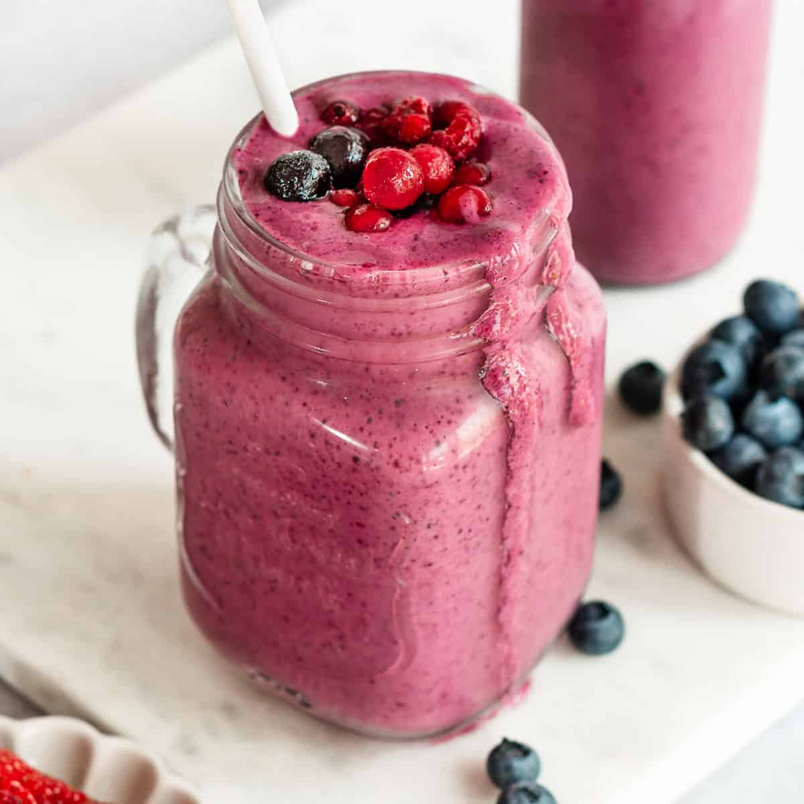

Berry Smoothie
By Chef Rjay · July 6, 2025
Refreshing and vibrant, this berry smoothie is packed with antioxidants and natural sweetness. Perfect for breakfast or a post-workout boost!
Tags:
Smoothie
Healthy
Berry
Category:
Drinks
Breakfast
Ingredients
- 1 cup frozen mixed berries
- 1 banana
- 1/2 cup Greek yogurt
- 1/2 cup almond milk (or any milk of choice)
- 1 tsp honey or maple syrup (optional)
- Ice cubes (optional)
Instructions
- Add all ingredients to a blender.
- Blend until smooth and creamy.
- Taste and adjust sweetness if needed.
- Pour into a glass and enjoy immediately!
Share:
← Back to Blog
Comments